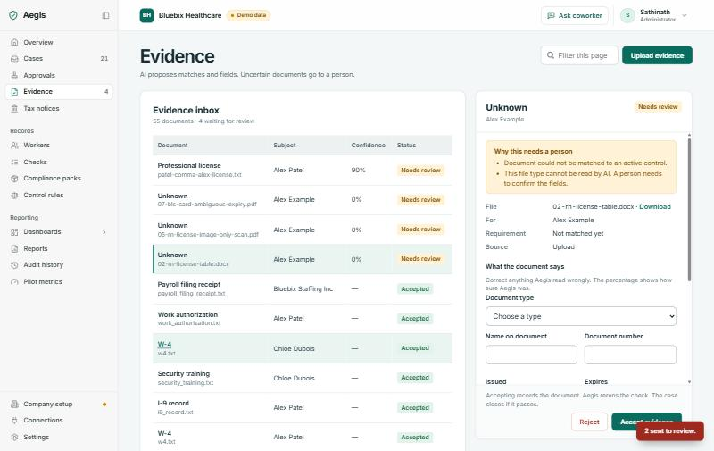
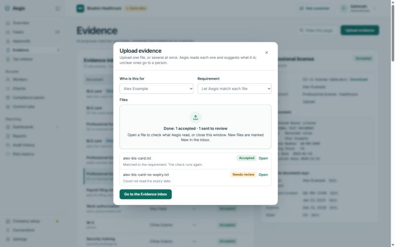
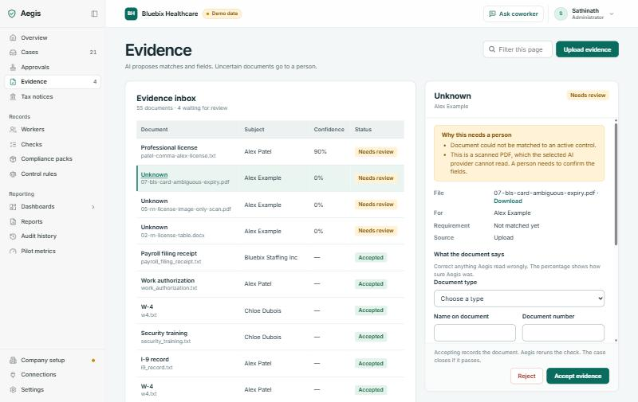
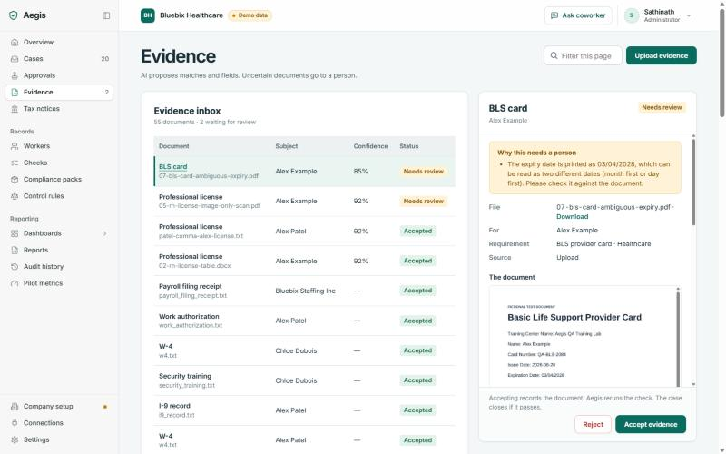
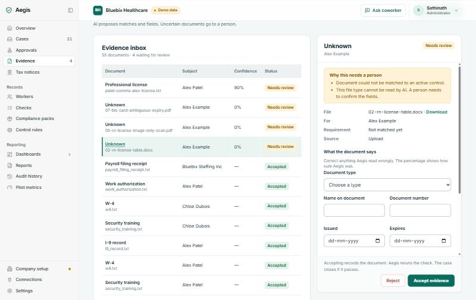
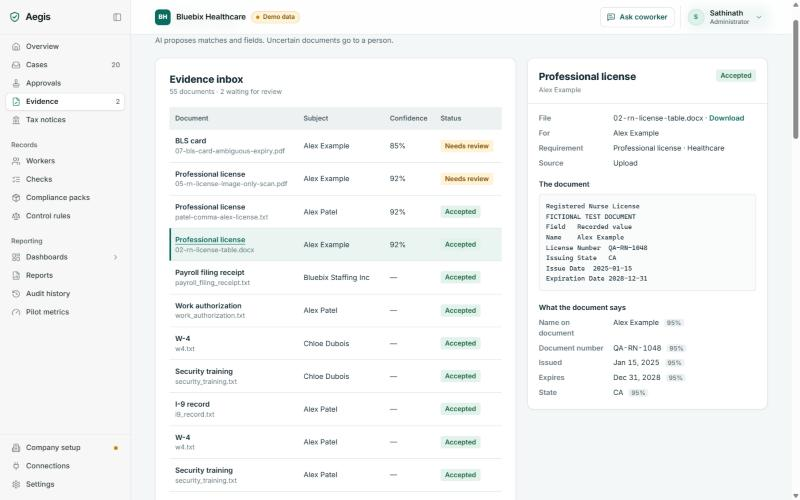
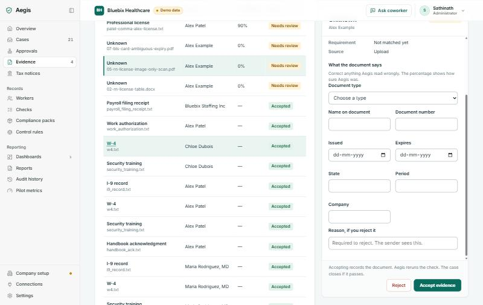
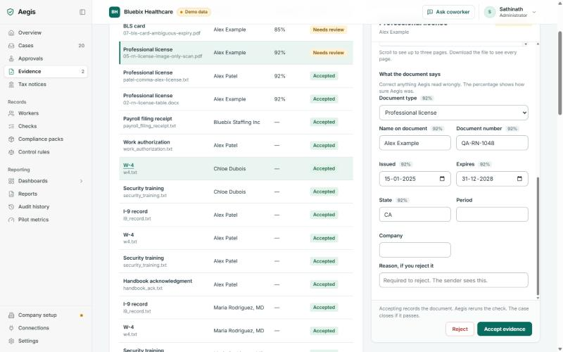
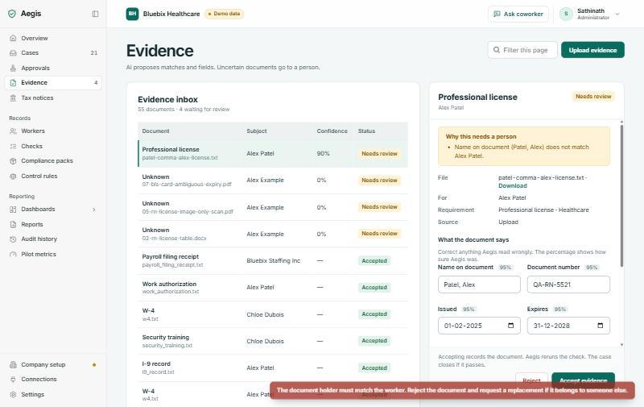
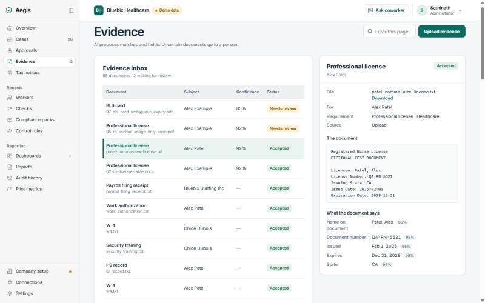

Aegis evidence reading: before and after
The same files uploaded to the old version (last commit, 6c3e132, reading with DeepSeek only) and to the new version (today's changes, Anthropic first and DeepSeek as fallback). Each server started with fresh demo data. Click a screenshot to open it full size.
Files: Aegis Evidence Test Kit 02 (Word table), 05 (scanned license), 07 (typed BLS card PDF), plus a license printed as "Patel, Alex" for the demo worker Alex Patel.
1. Uploading several files
Two small BLS card files for Alex Example: one complete, one without an expiry date.

The window closes. A small message in the corner says "2 sent to review" for 4 seconds, and the panel shows an unrelated file. Nothing says which file had which problem.

The window stays open and lists every file: "Accepted", or "Needs review: Could not read the expiry date". Each has an Open button.
2. A typed PDF (the problem your coworker reported)
07-bls-card-ambiguous-expiry.pdf: a normal typed BLS card, expiry printed as 03/04/2028.

"Unknown", 0%. Wrongly called "a scanned PDF, which the selected AI provider cannot read". Every field is empty, and there is no view of the document.

Read as a BLS card for Alex Example. The document is shown, and the reason is specific: the expiry 03/04/2028 can be read as two dates, so a person checks it.
3. A Word document
02-rn-license-table.docx: an RN license in a two-column table.

"This file type cannot be read by AI". Unknown, 0%, all fields empty: someone has to type everything in.

Read and accepted automatically: Alex Example, QA-RN-1048, Jan 15 2025, Dec 31 2028, CA. The text Aegis read is shown above the fields.
4. A scanned license
05-rn-license-image-only-scan.pdf: a picture of the license, no text in the file.

Nothing read. Every field is empty; the reviewer has to read the scan and type it all.

Every field filled from the scan by AI (92%). It still goes to a person to confirm, because it was read from a picture.
5. A name printed surname first
A license for the demo worker Alex Patel that prints the name as "Patel, Alex".

"Name on document (Patel, Alex) does not match Alex Patel". Pressing Accept is refused, so Alex Patel's own license can only be rejected.

Recognised as the same person and accepted. A real mismatch (Jordan Example for Alex Example) is still blocked.